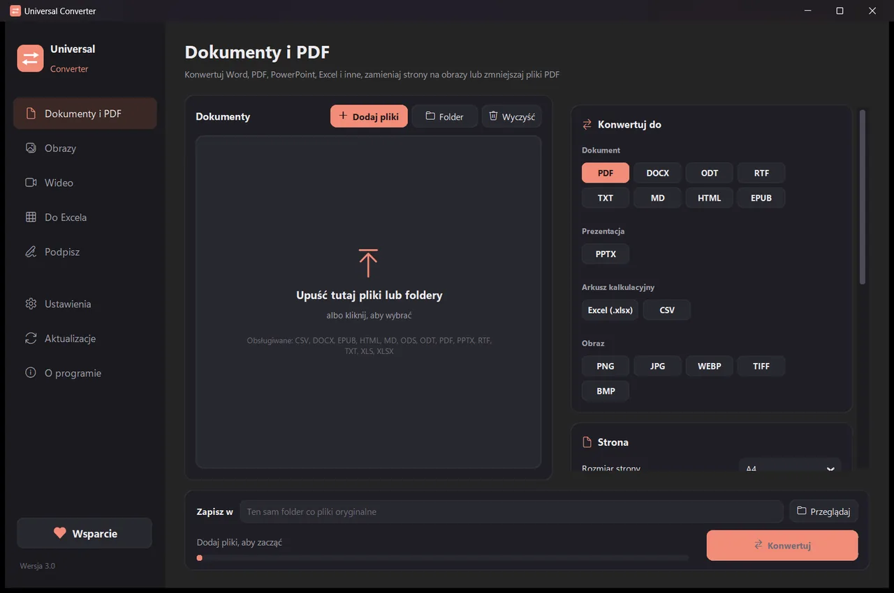

Połącz wiele plików w jeden PDF
Dodaj dokumenty w wybranej kolejności: pliki PDF, Word i PowerPoint, arkusze i tekst. Universal Converter połączy je w jeden PDF. Aby połączyć obrazy, użyj w ten sam sposób karty Obrazy.
Za darmo · Windows 10 i 11, 64-bit · Raport skanowania antywirusowegoWindows blokuje pobieranie lub aplikację? Pobierz ją ze sklepu Microsoft Store: ta sama darmowa aplikacja, której Windows ufa.
Pobierz dla Maca Apple silicon, macOS 12 lub nowszy
Jak zainstalować i aktualizować
- Otwórz pobrany plik .dmg i przeciągnij Universal Converter do Aplikacji.
- Otwórz aplikację. Za pierwszym razem macOS ją blokuje, bo nie jest podpisana przez Apple: kliknij Gotowe.
- Otwórz Ustawienia systemowe > Prywatność i ochrona, przewiń w dół, kliknij Otwórz mimo to i wpisz hasło. Robisz to tylko raz.
Aktualizacje: jeśli pozwolisz na to przy pierwszym otwarciu, aplikacja przy każdym starcie sprawdza nowe wersje, weryfikuje ich podpis cyfrowy i instaluje je, kiedy zechcesz.
Pobierz dla Androida Android 10 lub nowszy
Jak zainstalować i aktualizować
- Na telefonie stuknij Pobierz dla Androida.
- Otwórz pobrany plik. Jeśli Android zapyta, zezwól przeglądarce lub menedżerowi plików na instalowanie aplikacji.
- Stuknij Zainstaluj.
Aktualizacje: aplikacja sprawdza mniej więcej raz dziennie i informuje, gdy nowa wersja jest gotowa. Pobierz ją tak samo i zainstaluj na starej; ustawienia zostają zachowane.
Jak to zrobić
- Otwórz Universal Converter i wybierz po lewej Dokumenty i PDF.
- Przeciągnij pliki lub cały folder do okna albo kliknij Dodaj pliki.
- Wybierz PDF w Konwertuj do i włącz „Połącz w jeden PDF”.
- Kliknij Konwertuj. Nowe pliki są zapisywane obok oryginałów albo w wybranym folderze.

Dlaczego offline?
Universal Converter wykonuje pracę na Twoim urządzeniu. Twoje pliki pozostają prywatne, duże pliki nie są problemem, a wszystko działa bez internetu.
Co jeszcze potrafi
- Konwertuj PDF do Worda
- Konwertuj dokumenty Word do PDF
- Kompresja PDF do wybranego rozmiaru
- Konwertuj strony PDF na obrazy JPG
- Zamień zeskanowany dokument w edytowalny plik Word
- Konwertuj obrazy między JPG, PNG, WEBP i innymi
- Zmień rozmiar obrazów lub zmniejsz je do rozmiaru pliku
- Połącz zdjęcia w jeden PDF
- Skopiuj tekst z obrazu (OCR)
- Skompresuj film bez wysyłania go
- Konwertuj filmy między MP4, MKV, WebM, MOV i AVI
- Zapisz dźwięk z filmu jako MP3
- Zrób GIF-a z filmu
- Przenieś tabele z PDF do Excela
- Konwertuj wyciąg bankowy PDF do Excela
- Wyciągnij tabele z faktur PDF do Excela
- Podpisz PDF
- Wypełnij formularz PDF